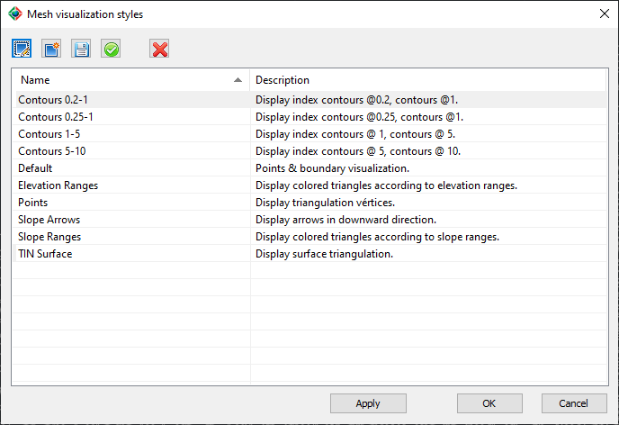
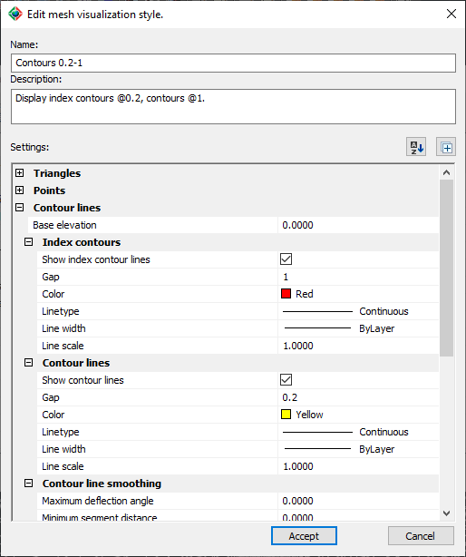

|
|
Toolbar:
Menu: CAD-Earth > Mesh > Mesh Explorer. Mesh Explorer node:
Context Menu: Visualization style...
|
|
|
Command line: CE_MESHEXPLORER
CAD-Earth version: Premium. |
(1).png)
.png)
.png)
(1).png)
Command description:
This command allows you to display one or several elements of a terrain mesh, such as vertices, triangulation, boundary, contour lines, elevation and slope ranges and slope arrows.
You can edit, create, delete and save a visualization style and choose which elements you want to display. Color, line type width and scale, text style and size can be adjusted, and parameter values can be modified.

If you pick a style from the list and press the edit style button, a dialog box will be displayed with the list items concerning that style expanded:

The properties and parameter values that you can change for each visualization item, are the following:
ØContour Lines:
•Base elevation. The elevation where the zero index contour will be placed (default 0)
•Index contours and contour lines:
•Show contour line. You can display both index and contour lines, just index contour or contour lines.
•Gap. vertical offset between index and contour lines. The gap between index contour lines must be a multiple of the contour lines gap.
•Color.
•Line type, width and scale.
•Contour line smoothing:
•Maximum deflection angle. The maximum angle deviation from a segment and the next one (decimal value).
•Minimum segment distance. Minimum allowable length for contour segments after smoothing subdivision.
•Number of subdivisions. Straight contour segments will be divided by this value before roundness is applied. If the resulting segment length after subdivision is less than the minimum specified the minimum segment length will be used to subdivide the contour segment.
•Curvature factor. A value between 0 (contours with straight segments) and 10 (rounded contour segments with maximum allowable bulge).
•Contour labels:
•Label index and contour lines. You can select to show index contour line and/or contour labels, or hide both.
•Gap factor between labels. The separation distance between label text along a contour line will be adjusted according to this factor and the label text size.
•Text size.
•Decimal places.
•Color.
•Text style.
•Prefix. Text to add before the label.
•Suffix. Text to add after a label.
ØTriangulation:
•Show triangles.
•Color.
•Line type, width and scale.
ØPoints:
•Show points. A point will be displayed on each triangle vertex.
•Color.
ØBoundary:
•Show boundary. Only triangle sides not shared with another triangle will be displayed.
•Color.
•Line type, width and scale.
ØSlope ranges:
•Show slope ranges. Triangles within a minimum and maximum slope will be colored according to the ranges defined.
•Number of active ranges. Up to five ranges can be created, defining their start and end percentage and color. The start slope value must be the same as the end slope value of the previous range, and the end slope value must be the same as the next slope range start slope value. The start and end slope values within a range must not be the same.
ØElevation ranges:
•Show elevation ranges. Horizontal colored bands projected on the mesh will be displayed, according to the number of active ranges and colors defined.
•Number of active ranges. Colors must be defined for each active range.
ØSlope arrows
•Show slope arrows. Arrows will be displayed from the center of each triangle, pointing downward in the slope direction.
•Arrow size.
•Size relative to screen height. If this option is checked, the arrow size value will be calculated as a percentage of the screen height in drawing units.
•Color.
ØBreak lines.
•Show break lines. The break lines inserted in the mesh will be displayed with the color, line type, width and scale selected.
•Color.
•Line type, width and scale.
Tips:
•You can change the mesh visualization style to make elements within the mesh visible for easier selection, or to identify areas with high and low slopes and elevations.
Copyright © 2023 Arqcom Software
Google Earth© is a registered trademark of Google inc. All other trademarks are the property of their respective owners.